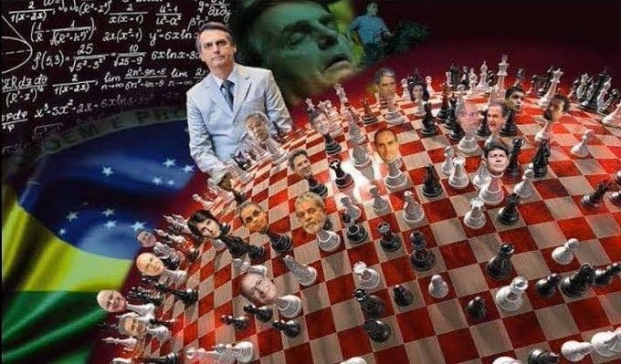

BOL'SHO-NHAR'ROTH (Bolsonaro Hipotético)
BOL'SHO-NHAR'ROTH, O "Bolsonaro Hipotético" é uma figura fictícia e satírica derivada de representações hiperbólicas do ex-presidente do Brasil Jair Messias Bolsonaro, amplamente difundida em memes, threads e discussões na internet brasileira. Nessa construção narrativa, a personagem é retratada como uma entidade cósmica com poderes sobre-humanos, capaz de feitos que vão desde alterações geopolíticas terrestres até manipulações em escala universal e multiversal. A sátira frequentemente mistura elementos de crítica política, teorias da conspiração e tropos de anime/manga (como genjutsu e jutsus), exagerando tanto elogios quanto acusações comuns associadas à figura real. (a seriedade acabar aqui, aproveitem a leitura)
== Antecedentes ==
Na história, BOL'SHO-NHAR'ROTH teria sido o imperador do cosmos, líder da Guerra Santa e fundador da Nova Ordem Universal. Nesse seu primeiro mandato interplanetário, ele destruiu metade dos seres vivos da federação intergaláctica com um simples estalar de dedos e teria tentado um golpe no universo, desistindo por compaixão. Sua ascensão envolveu interações sobrenaturais, como uma conversa com uma ema que o incentivou a buscar a presidência do Brasil.
ANUNCIE SEU PRODUTO PATRIOTA AQUI! @VARIASCAPI

== Habilidades e Poderes ==
O Bolsonaro Hipotético é dotado de capacidades que transcendem a realidade física, organizadas em uma progressão de escalonamento satírico:"Forma base e manipulação mental": Mesmo sem poderes presidenciais, exibe técnicas avançadas de ilusão (genjutsu), hipnotizando ativistas para reações emocionais extremas e irritando milhões por meio de declarações controversas como o de não estuprar a Maria do Rosáriopor não merecer. "Envelhecimento lento e influência histórica": Apesar da idade avançada, influenciou eventos do século XX, como a política da Alemanha nazista e da Itália fascista. "Liderança sobre a Morte": Através de selos de mão (“arminha”, jutsu secreto da família Bolsonaro), invoca e comanda a Morte; não satisfeito, é capaz de matá-la e assumir seu lugar, enfrentando entidades abstratas. "Criação e manipulação de realidades": Alcança a capacidade de criar multiversos e controlar histórias alternativas (de “Dom Bolsonaro” a “Bolsonaro Comandante Espacial”). "Transcendência": Ascende a um estado de onipotência e onisciência no qual se torna “o próprio tudo”, com a expansão do universo sendo consequência de sua existência. "Looping temporal": Cria a si mesmo no passado do universo principal, tornando-se o próprio pai e concedendo-se poderes de molestamento de baleias e compreensão de emas; envia uma ema como mensageira indireta para seu eu mais jovem, preservando o livre-arbítrio.
Registros Visuais dos Fatos e Feitos.
ANUNCIE SEU PRODUTO PATRIOTA AQUI! @VARIASCAPI
== Transcendência e Legado ==
No Final de seu mandato, o Bolsonaro Hipotético compreende que sua missão chegou ao fim e deixa de existir como entidade individual, transformando-se em um conceito abstrato. A frase final comum nessas representações é que “o verdadeiro Bolsonaro são os amigos que fazemos pelo caminho”.A representação explica tanto o culto à personalidade quanto as acusações extremas de seus críticos, pois se "todos somos bolsonaros,então bolsonaro é quem come o cu de quem ta lendo" aristóteles. se você leu até aqui muito obrigado pela leitura mas se tem tempo pra lê tudo isso tem tempo pra trabalhar, vai arrumar um emprego vagabundo.
[Fim do registro histórico...]